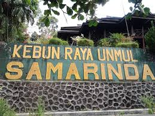

Sistem Informasi Geografis - Wisata Di Kalimantan Barat
Tentang Website Ini
Website ini adalah Sistem Informasi Geografis yang menampilkan lokasi wisata di Kalimantan Barat.
Dibangun untuk memberikan informasi kepada wisatawan mengenai destinasi menarik di daerah Kalimantan Barat.
Galeri Wisata
Gunung Bukit RayaKawasan ini merupakan ekosistem hutan hujan tropis yang kaya akan keanekaragaman hayati, termasuk flora dan fauna endemik. Taman ini juga berfungsi sebagai lokasi perlindungan alam.Danau SentarumTerletak di Kabupaten Kapuas Hulu, taman ini terkenal dengan cekungan danau yang luas, menjadi habitat bagi berbagai spesies ikan dan burung, serta memiliki keindahan alam yang menakjubkan.

Kebun Raya UnmulKebun raya ini merupakan tempat penelitian dan konservasi berbagai jenis tumbuhan, serta menjadi lokasi edukasi bagi pengunjung tentang keanekaragaman hayati.
Air Terjun Tanjung KoyanAir terjun ini menawarkan pemandangan yang spektakuler dan suasana yang sejuk, ideal untuk kegiatan trekking dan menikmati alam.Tugu KhatulistiwaSebagai ibu kota Kalimantan Barat, Pontianak memiliki berbagai tempat menarik seperti Tugu Khatulistiwa, yang menandai garis khatulistiwa. Selain itu, pengunjung dapat menikmati kuliner khas dan budaya lokal.Air Terjun SijunjungTerletak di Kabupaten Landak, air terjun ini menawarkan pemandangan yang menakjubkan dan suasana yang tenang. Tempat ini cocok untuk kegiatan trekking dan piknik.Danau BiruTerletak di Kabupaten Bengkayang, Danau Biru adalah danau yang terbentuk dari bekas galian tambang. Airnya yang jernih dan berwarna biru membuatnya menjadi tempat yang populer untuk berfoto dan bersantai.